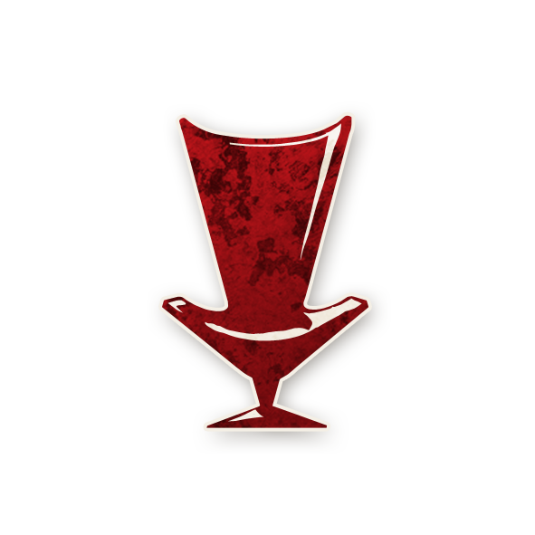

Mastermind

ถ้าปีศาจถูกโหวตประหาร เกมจะยังเดินต่อไปจนถึงเช้าวันถัดไป, หากวันนั้น มีคนถูกโหวตประหาร ฝ่ายนั้นจะแพ้ทันที
- หากมี Mastermind อยู่ ถึงแม้ปีศาจตายเกมจะยังไม่จบ ผู้เล่นจะไม่รู้ว่าปีศาจตายแล้ว, ในกลางวันต่อมา หากมีคนดีถูกประหาร ไม่ว่าคนนั้จะตายหรือไม่ก็ตาม ฝ่ายร้ายจะชนะ แต่ถ้าฝ่ายร้ายถูกประหาร หรือไม่มีใครถูกประหาร ฝ่ายดีจะชนะ
- ในตอนที่ปีศาจตาย ปีศาจก็จะสูญเสียความสามารถ และฆ่าคนไม่ได้
- หากปีศาจตาย และเหลือผู้เล่นเพียง 2 คน เกมก็จะยังไม่จบ (แสดงว่ายังเหลือ Mastermind และคนดี 1 คน) ฝ่ายร้ายจะยังไม่ชนะ ฝ่ายดีก็จะยังไม่ชนะ ต้องเล่นต่อจนถึงกลางวันถัดไป
ตัวอย่าง
- Shabaloth ตาย, วันถัดมา Professor ถูกประหารและตาย ทำให้ฝ่ายร้ายชนะ
- Po ตาย, วันถัดมา Godfather ถูกประหาร แต่ไม่ตาย เนื่องจากถูกปกป้องโดย Devil's Advocate แต่เกมจะจบ และฝ่ายดีชนะ
- Zombuul ถูกประหาร และตาย(เป็นครั้งแรก) ทุกคนจะเห็นว่า Zombuul ตาย แต่จริงๆแล้วยังไม่ตาย, ความสามารถของ Mastermind จะยังไม่ทำงาน
Tips & Tricks
- พยายามอยู่รอดเอาไว้ คุณจะต้องตายเป็นคนสุดท้ายในทีม สื่อสารกับปีศาจ และช่วยกัน bluff ทำให้ทุกคนเชื่อใจคุณให้มากที่สุด
- หากคนดี รู้ว่ามี Mastermind อยู่ และเมื่อไหร่ที่พวกเขามั่นใจว่าโหวตฆ่าปีศาจได้แล้ว ในวันต่อมาพวกเขาจะไม่โหวตอีกแล้ว, ถ้าจะหลอกพวกเขา คุณต้องเลือกประหารปีศาจ ในช่วงเวลาที่ทุกคนไม่สงสัยว่ามี Mastermind อยู่ และให้พวกเขาเล่นต่อไปเหมือนปกติ โน้มน้าวให้พวกเขาโหวตคนดีในวันถัดไป คุณก็จะชนะทันที
- พยายามกระตุ้นให้คนดีโหวตประหารในทุกๆวัน เมื่อถึงเวลาที่ปีศาจตาย พวกเขาจะไม่รู้ตัวและยังโหวตต่อไป
- โน้มน้าวให้คนดีคิดว่าลูกสมุนเป็นตัวอื่น เช่น bluff ว่าเป็นคนนอก ให้พวกเขาคิดว่ามี Godfather อยู่ หรือในคืนที่มีคนตายแบบผิดปกติ บอกพวกเขาว่าเป็นฝีมือของ Assassin หรือหากมีคนถูกประหารแต่ไม่ตาย บอกพวกเขาว่าเป็นฝีมือของ Devil's Advocate
- หากปีศาจถูกโหวตประหาร, คุณต้องพยายามทำยังงัยก็ได้ให้มีคนตายในคืนนั้น เช่น บอก Assassin ให้ใช้ความสามารถ, โน้มน้าว Gambler ให้ทายตัวละครของคุณ, โน้มน้าว Gossip ให้ปล่อยข่าวลือที่เป็นจริง หรือเดินไปคุยกับ Storyteller ให้ช่วยฆ่า Tinker ให้, ถ้ามีคนตายในคืนนั้น พวกคนดีอาจจะไม่คิดว่าปีศาจตายแล้ว และเล่นต่อไปเหมือนปกติในวันรุ่งขึ้น ทำให้คุณมีโอกาสชนะจากการโหวตได้
ทำอย่างไรเมื่อต้องเจอกับ Mastermind
- ใน Bad Moon Rising, ลูกสมุนจะมีความสามารถที่ทำให้คุณสังเกตอะไรบางอย่างได้ เช่น Devil's Advocate ปกป้องคนจากการถูกประหารได้, Assassin หรือ Godfather ทำให้มีคนตายเพิ่มขึ้นตอนกลางคืนได้, หากคุณสังเกตประเด็นเหล่านี้ได้ คุณอาจสามารถรู้ได้ว่า ไม่มี Mastermind อยู่ในกลุ่ม และตัดสินใจเลือกประหารในทุกๆวัน
- หากไม่มีใครตายในคืนนั้น ให้ระมัดระวังเป็นพิเศษ ในการประหารผู้เล่นในวันรุ่งขึ้น
- หาก Mastermind ตาย, ความสามารถก็ไม่ทำงาน ดังนั้นหากคุณคิดว่าใครน่าสงสัย ก็พยายามประหารพวกเขา